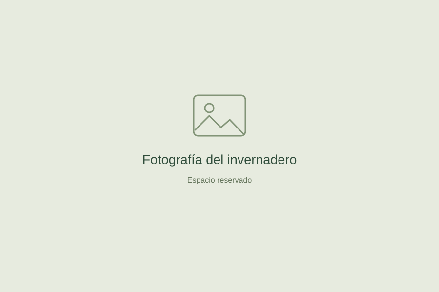

La versión final: control automático, manual y Bluetooth
El resultado del proyecto y las dos funciones que quedan pendientes: las puertas y el sensor de flujo.
Leer la entradaUniversidad Mariano Gálvez de Guatemala
Así desarrollamos un invernadero automatizado con ESP32: sensores para observar el ambiente y control para cuidar el riego, la ventilación y la luz.

El recorrido
Cada etapa dejó una decisión,
una prueba y algo que aprender.
El resultado del proyecto y las dos funciones que quedan pendientes: las puertas y el sensor de flujo.
Leer la entradaEl problema, los objetivos y la elección del ESP32 como unidad central.
Leer la entradaOrganización del sistema y atención a las conexiones, la alimentación y la calibración.
Leer la entradaLecturas, visualización y control de actuadores: el trabajo previo a la entrega final.
Leer la entradaEl proyecto
El invernadero reúne la medición del entorno y el control de dispositivos en un mismo prototipo.
El objetivo es aplicar los conocimientos de Electrónica Digital a una necesidad concreta: apoyar el cuidado de las plantas mediante el riego, la circulación de aire y la iluminación.
Ver el cierre del proyectoLa automatización de las puertas y la incorporación del sensor de flujo.
Cómo funciona
Selecciona una función para seguir
su recorrido dentro del sistema.
Los sensores de humedad del suelo aportan información al ESP32. En modo automático, el programa utiliza esa lectura para decidir la activación de la bomba.
Representación explicativa del funcionamiento.
El programa relaciona las lecturas de los sensores con las condiciones definidas para controlar los actuadores.
El usuario interviene sobre los actuadores para comprobarlos y operar el sistema directamente.
El teléfono se comunica con el ESP32 para consultar información y enviar instrucciones de control.
Dentro del prototipo
Cada componente cumple una tarea
en la medición o en el control.
| Componente | Función en el proyecto | Grupo |
|---|---|---|
| ESP32 | Procesa las lecturas, ejecuta la lógica de control y permite la comunicación Bluetooth. | Control |
| DHT22 | Obtiene la temperatura y la humedad del ambiente. | Medición |
| 2 sensores capacitivos de suelo | Permiten observar la humedad en dos puntos del sustrato. | Medición |
| BH1750 | Aporta la lectura de iluminación del entorno. | Medición |
| MQ-135 | Sensor de gases incluido entre los componentes del prototipo. | Medición |
| Pantalla LCD 16 × 2 | Presenta información del sistema de forma local. | Visualización |
| Módulo de relés | Permite conmutar los actuadores a partir de las señales del controlador. | Interfaz |
| Bomba, ventilador y luces LED | Realizan el riego, la ventilación y la iluminación. | Actuación |
El proyecto en imágenes
Espacios para fotografías y esquemas
de la organización del sistema.
Los espacios reservados se completarán con fotografías del proyecto.
Lo que aprendimos
El proyecto permitió relacionar sensores, programación y actuadores en una aplicación concreta. Las pruebas por separado ayudaron a identificar problemas antes de trabajar con el conjunto.
La versión final incorpora operación automática, modo manual y comunicación Bluetooth. Las puertas automáticas y el sensor de flujo quedan como los únicos pendientes del alcance previsto.
Leer las conclusionesQuiénes somos
Estudiantes de Electrónica Digital.
Universidad Mariano Gálvez de Guatemala.